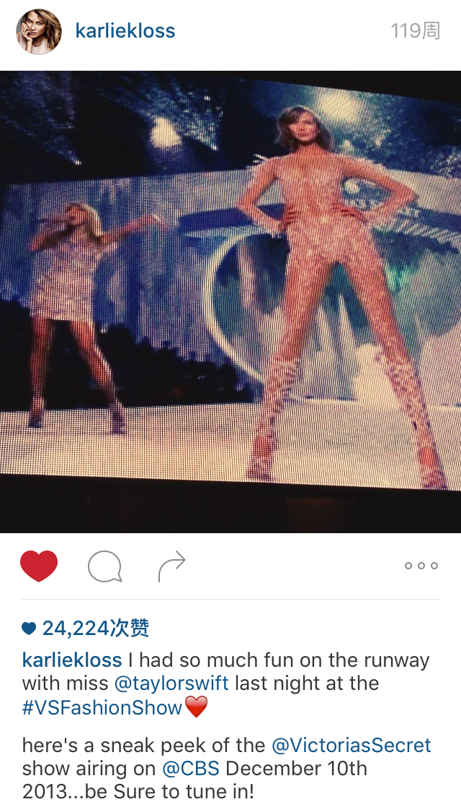
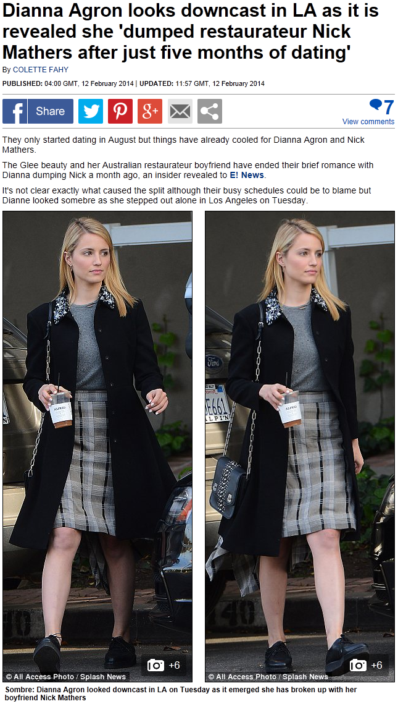

4. Finally Clean
11月25号，DA为The Killers乐队拍的MV - < Just Another Girl >开播。DA在这MV里的男装扮相很惊艳，推荐一看。
{kind=link}
（歌词很符合TS当时的心境）
11月29-12月14号，TS在澳洲巡演。
12月7号，澳大利亚布里斯班演唱会结束后，有个去了Club RED的粉丝问TS觉得DA怎样，TS说"she is so lovely, the nicest girl you will meet"，粉丝接着问TS和DA多久会见一次面，TS回答DA现在有男朋友了，所以她们已经几个月没见面了，然后反问粉丝有没有看过DA最新的MV < Just Another Girl >，接着TS一直和粉丝聊她很喜欢这首歌，这个MV拍的有多好等等。
{kind=link}
大概就是在澳洲巡演期间，TS写下了Out of the Woods
12月10号，VS在CBS播出，TS和KK分别在社交平台上有所表示
尤其是KK的，对比看她11月和12月的措辞
这是11月14号，miss @taylorswift
这是12月10号，my girl @taylorswift

从miss到my girl，这是从不太熟悉到好朋友的转变，看TS和KK这一个月间的行程，她们从VS之后就一直分处2地， KK在14年2月接受采访时说她和TS是BFF了，两个人都很忙，但会短信电话联系，也许她们VS碰面后就是从网友做起的。
我想起了当年的网友Adam Young和那首Enchanted。
12月28号，Selena去TS家喝茶，还一起和Demi Lovato Facetime，度过了一个Saturday night。可能就是这天，TS当着Selena的面写了Wildest Dreams。
{kind=link}
{kind=link}
2015年12月3号TS在澳大利亚Nova's Red Room面对粉丝时介绍Wildest Dreams说：
It was a song about a place I was in my life where I was very fatalist, I had a very fatalist idea of love and I was just, you know, clearly in a very bad mood and I was like, “Love just ends, you know, it's not a question of ‘Will we break up', it's ‘When will we break up'.”
这首歌写的是我人生中曾有个时期非常相信宿命，关于爱情我更相信命中注定，我情绪很低落，（我经历的事情让我觉得）“没有长久的爱情，这不是‘我们会不会分手'的问题，而是‘我们什么时候会分手'”
在1989 track by track中TS谈到Wildest Dreams也说
I think the way I see love is kind of a little more fatalistic
我现在看待感情的方式更相信命中注定
This Love中
In silent screams, in wildest dreams
I never dreamed of this
她从没想过爱情最后会变成这样，这段经历让她在2013年底绝望的认为世上没有长久的爱情，至少对她自己而言，爱情总会结束，只是时间问题。
命里有时终须有，命里无时莫强求
进入2014年
1月8号，TS在纽约曼哈顿Greenwich Village（KK家所在的区）看房子（虽然她最后买的位置在Tribeca），1月9号，TS和Austin还在纽约，1月10号是Mama Swift生日，1989发行前的粉丝秘密试听会上有粉丝在TS纽约的家中看到一张照片上是KK参加Mama Swift生日的合影。
在11月13号VS一结束TS就和全家飞去伦敦在那看房子，2个月后TS又在纽约看房子。15年3月Vogue的花絮中，KK说：
"She lives in Nashville, and L.A. and New York. And she almost moved to London, and I said, “Nope, not happening.”, and now lives in New York."
“她有时住在纳什维尔，有时在洛杉矶有时纽约。她差点就要搬到伦敦去了，我说“没门，想都别想”，于是她现在住纽约了”
感谢KK让TS留在了美国。
1月22号，TS和Ryan Tedder一起录了I Know Places。
1月23号，TS写Welcome to New York。
1月26号，TS在格莱美上肝肠寸断的唱了All Too Well。
1月27号，DA在推特上和朋友谈论听Imogen Heap的歌。
{kind=link}
1月28号，Claire在INS上晒出她收到的Karlie's Kookies。
{kind=link}
KK不动声色的用小饼干收买TS的朋友，亲们都学着点啊。
2月4号，KK接受Cosmopolitan采访，谈到TS，透露了她们现在是BFF，会互发短信。
2月1号-11号，RED欧洲区巡演
{kind=link}
2月8号，TS在伦敦突然顿悟到，自己已经不再被情所困，放下一切，找回自己，并邀请Imogen Heap一起合作一首歌。
2月9号，TS拜访Imogen Heap，从早上一起工作到晚上，共同完成了1989中最后一首歌Clean。
{kind=link}
从Imogen Heap的博文中可以详细的看到她们合作的契机和过程，在Imogen家，TS先给她弹唱了第1节和副歌，Imogen觉得很不错两人开始合作，到了中午快吃午饭时
I was editing and mixing the bits in, meantime Taylor had written the 2nd verse! Good going gals! Teamwork! It was time for a late lunch.
这时候TS才写了第2节，也就是TS在之前只写了第1节和副歌，第2节和第3节都是2月9号当天才写出来的。
第3节中写着
10 months sober, I must admit
Just because you're clean don't mean you don't miss it
10 months older, I won't give in
Now that I'm clean I'm never gonna risk it
Months and months of back and forth的起点，就是从她写下歌词的2月9号往前推10个月，2013年4月。
10个月后终于clean
虽然clean，不代表不会怀念
既然clean，就不会再回头
2月10号，DA在推上推荐Riptide。
2月11号，伦敦演唱会结束后，TS剪了头发，30多人围观了这个过程，包括RED团队成员、Cara Delevingne和这场演唱会的表演嘉宾Ellie Goulding。有媒体说HS也来围观剪头发，这是谣言，已辟谣。
{kind=link}
{kind=link}
{kind=link}
{kind=link}
TS选择在写完Clean后，回LA的前一晚剪断长发，是一种表态，旧的自己留在身后，回到美国的是新的自己。
as an old chapter closes, a new chapter begin
TS剪完头发后，有不少媒体说TS剪了个和KK一样的发型，链接1，链接2，链接3，并翻出了13年11月VS之后KK接受采访时说过的话，原来TS的确是照着KK的发型去剪的。
2月12号，传出消息，DA和Nick Mathers已经分手了
报道上说，他们一个月前就已经分手了，也就是差不多TS去纽约看房子的时候。
The Glee beauty and her Australian restaurateur boyfriend have ended their brief romance with Dianna dumping Nick a month ago
TS死心了打算搬家去伦敦，DA的男朋友就再没露过面
TS去纽约看房子，DA就和男朋友分手了
TS断发明志，DA就放出消息，她早就和男朋友分手了
我想起一句歌词
Now it's too late for you and your white horse
To catch me now
DA和Nick Mathers真正在一起的时间也只有9、10两个月，就算不是PR也不会是认真的。从2014年KK和Jo在一起时TS的反应看，她一直都对自己的女朋友要和“男朋友”在一起这种事很介意很反感。
You always knew how to push my buttons
知道TS的雷点在哪还猛按，最后只能同归于尽。
就像1989演唱会OOTW大屏幕上的视频画面，两只狐狸一直跑啊跑，跑过森林跑过高山，路的尽头是悬崖，她们一起跳了下去。
这段关系从2013年4月开始瓦解，经过数月徘徊，在2013年11月以TS决定搬家断发为标志宣告结束，再经过3个月的内心挣扎，2014年2月终于解脱。
I THINK I AM FINALLY CLEAN